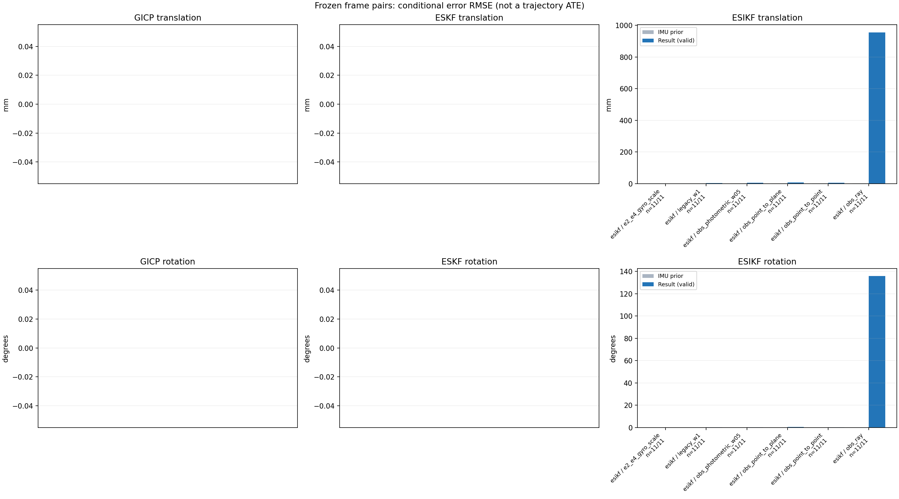

20261015_112940_pitch_up · depth=disparity_cache · cache=997371b3dbd7d1410806
模型视差：/home/ubuntu22/slam/SIO_SLAM/models/tensorrt/disp_896x448_fp16.plan；engine SHA256=604cf6ac1f705c877260711730dd5d2d58c2a21f3020c03c668401ef7fb1e768。输入为生产裁剪与光照处理后的 RGB 0..255；此实验使用原始浮点像素视差，不应用完整前端的邻域视差后处理。
原始 ONNX SHA256：e9f49736a65d68d06681add463866b6defdf78fdd7f4f50f6cc941b682fdc0bc。
代价体图改写验证：ONNX Runtime 固定随机特征输入，最大绝对误差 0；该项检查图改写，完整模型精度仍需由录制数据评估。
配准代码版本：744ac2d993ae629b0cc44a3b1d995e04ab4fad48；观测生成版本：744ac2d993ae629b0cc44a3b1d995e04ab4fad48。
固定图像对与纯 IMU 先验；ESKF 回放固定 GICP 观测，ESIKF 直接读取点云。真值只用于此报告。
同时查看 converged 与 solver_status：上游默认 Stereo 在 max_iter / stopped_at_minimum 时也可能置 converged=true。valid 表示输入检查通过，不表示精度提升。欧氏 GICP 未提供独立的点距 RMSE，该列显示 NaN。
误差按每对图像的锚点计算，单位 m / degrees。此处 RMSE 不是全序列 ATE；末帧受同一锚点条件约束。NIS 与条件马氏距离是诊断量，少量相关图像对不能用于宣称协方差已校准。
全部指标 CSV · R / P / K 矩阵 CSV · Stereo 求解逐轮 CSV · ESIKF 逐轮 CSV · 配置快照 · 矢量图
unflagged 排除纯惯性先验平移误差超过 50 mm 的图像对；whitened 为误差按协方差白化后的每自由度均值，协方差与实际误差相符时约为 1。
| stage | method | variant | valid | total | result_translation_rmse_m | result_rotation_rmse_deg | result_translation_median_m | result_rotation_median_deg | result_translation_rmse_unflagged_m | result_rotation_rmse_unflagged_deg | improved_translation | improved_rotation | posterior_whitened_by_P_rot_mean | posterior_whitened_by_P_trans_mean |
|---|---|---|---|---|---|---|---|---|---|---|---|---|---|---|
| esikf | esikf | e2_e4_gyro_scale | 11 | 11 | 0.00049962 | 0.011688 | 0.00026905 | 0.0093644 | 0.00049962 | 0.011688 | 3 | 0 | 1.0749 | 1.2579 |
| esikf | esikf | legacy_w1 | 11 | 11 | 0.0041387 | 0.23696 | 0.0023656 | 0.090013 | 0.0041387 | 0.23696 | 1 | 0 | 32.893 | 12.764 |
| esikf | esikf | obs_photometric_w05 | 11 | 11 | 0.0050694 | 0.29178 | 0.0039564 | 0.20147 | 0.0050694 | 0.29178 | 0 | 0 | 25.42 | 9.8041 |
| esikf | esikf | obs_point_to_plane | 11 | 11 | 0.0071819 | 0.37319 | 0.0069016 | 0.30085 | 0.0071819 | 0.37319 | 0 | 0 | 20.658 | 12.202 |
| esikf | esikf | obs_point_to_point | 11 | 11 | 0.0050768 | 0.29356 | 0.0039235 | 0.20135 | 0.0050768 | 0.29356 | 0 | 0 | 51.367 | 19.657 |
| esikf | esikf | obs_ray | 11 | 11 | 0.95616 | 135.78 | 0.26929 | 138.72 | 0.95616 | 135.78 | 0 | 0 | 80.301 | 262.04 |

| stage | case | method | variant | status | solver_status | inliers | converged | covariance_convention | covariance_from_hessian | fitness | registration_rmse_m | prior_trans_error_m | result_trans_error_m | prior_rot_error_deg | result_rot_error_deg | prior_flagged | R_rot_trace_rad2 | R_pos_trace_m2 | nis_regularized | posterior_whitened_by_P_rot | posterior_whitened_by_P_trans |
|---|---|---|---|---|---|---|---|---|---|---|---|---|---|---|---|---|---|---|---|---|---|
| esikf | static_a096 | esikf | obs_point_to_point | updated_not_converged | max_iterations | 4962 | 0 | 1 | 0 | 0 | 4.2352e-05 | 0.0039235 | 0.0024661 | 0.088985 | 0 | 5.406e-07 | 1.1293e-06 | nan | 9.1502 | 11.671 | |
| esikf | static_a096 | esikf | obs_photometric_w05 | updated_not_converged | max_iterations | 4961 | 0 | 1 | 0 | 0 | 4.2352e-05 | 0.0039564 | 0.0024661 | 0.089946 | 0 | 1.0808e-06 | 2.2575e-06 | nan | 4.7096 | 5.9426 | |
| esikf | static_a096 | esikf | obs_ray | updated_not_converged | correspondences_lost | 297 | 0 | 1 | 0 | 0 | 4.2352e-05 | 0.22217 | 0.0024661 | 98.551 | 0 | 0.16653 | 0.0025279 | nan | 123.5 | 43.02 | |
| esikf | static_a096 | esikf | obs_point_to_plane | updated | converged | 4963 | 1 | 1 | 0 | 0 | 4.2352e-05 | 0.0043292 | 0.0024661 | 0.10567 | 0 | 1.9603e-06 | 3.6174e-06 | nan | 1.7681 | 5.8379 | |
| esikf | static_a096 | esikf | legacy_w1 | updated | converged | 4946 | 1 | 1 | 0 | 0 | 4.2352e-05 | 0.0014737 | 0.0024661 | 0.036529 | 0 | 5.4814e-07 | 1.1586e-06 | nan | 1.6268 | 1.7424 | |
| esikf | static_a096 | esikf | e2_e4_gyro_scale | updated | converged | 4940 | 1 | 1 | 0 | 0 | 4.2352e-05 | 5.9533e-05 | 0.0024661 | 0.0048376 | 0 | 5.4856e-07 | 1.1585e-06 | nan | 0.26713 | 0.11543 | |
| esikf | static_a100 | esikf | obs_point_to_point | updated_not_converged | max_iterations | 5187 | 0 | 1 | 0 | 0 | 5.825e-05 | 0.0049485 | 0.0031067 | 0.33583 | 0 | 4.4549e-07 | 1.0651e-06 | nan | 52.903 | 19.994 | |
| esikf | static_a100 | esikf | obs_photometric_w05 | updated_not_converged | max_iterations | 5180 | 0 | 1 | 0 | 0 | 5.825e-05 | 0.0049052 | 0.0031067 | 0.32805 | 0 | 8.915e-07 | 2.1302e-06 | nan | 24.98 | 9.8443 | |
| esikf | static_a100 | esikf | obs_ray | updated_not_converged | correspondences_lost | 52 | 0 | 1 | 0 | 0 | 5.825e-05 | 0.58354 | 0.0031067 | 138.72 | 0 | 2.0661 | 0.078123 | nan | 63.475 | 2.7604 | |
| esikf | static_a100 | esikf | obs_point_to_plane | updated | converged | 5063 | 1 | 1 | 0 | 0 | 5.825e-05 | 0.0040499 | 0.0031067 | 0.24971 | 0 | 1.5958e-06 | 3.6206e-06 | nan | 14.371 | 3.3828 | |
| esikf | static_a100 | esikf | legacy_w1 | updated | converged | 5038 | 1 | 1 | 0 | 0 | 5.825e-05 | 0.002718 | 0.0031067 | 0.13515 | 0 | 4.6116e-07 | 1.0906e-06 | nan | 7.2462 | 6.8741 | |
| esikf | static_a100 | esikf | e2_e4_gyro_scale | updated | converged | 5007 | 1 | 1 | 0 | 0 | 5.825e-05 | 0.00015729 | 0.0031067 | 0.010999 | 0 | 4.7008e-07 | 1.1162e-06 | nan | 1.4572 | 0.60872 | |
| esikf | static_a104 | esikf | obs_point_to_point | updated_not_converged | max_iterations | 5315 | 0 | 1 | 0 | 0 | 8.1652e-05 | 0.0057766 | 0.0047918 | 0.20135 | 0 | 4.2894e-07 | 1.0409e-06 | nan | 26.395 | 30.911 | |
| esikf | static_a104 | esikf | obs_photometric_w05 | updated_not_converged | max_iterations | 5309 | 0 | 1 | 0 | 0 | 8.1652e-05 | 0.0057589 | 0.0047918 | 0.20147 | 0 | 8.5792e-07 | 2.0839e-06 | nan | 13.24 | 15.32 | |
| esikf | static_a104 | esikf | obs_ray | updated_not_converged | correspondences_lost | 62 | 0 | 1 | 0 | 0 | 8.1652e-05 | 0.37943 | 0.0047918 | 147.22 | 0 | 1.2943 | 0.046966 | nan | 101.06 | 13.01 | |
| esikf | static_a104 | esikf | obs_point_to_plane | updated_not_converged | max_iterations | 5297 | 0 | 1 | 0 | 0 | 8.1652e-05 | 0.0033046 | 0.0047918 | 0.19743 | 0 | 1.6314e-06 | 3.4827e-06 | nan | 12.892 | 2.1801 | |
| esikf | static_a104 | esikf | legacy_w1 | updated | converged | 5240 | 1 | 1 | 0 | 0 | 8.1652e-05 | 0.0022056 | 0.0047918 | 0.068864 | 0 | 4.3928e-07 | 1.0806e-06 | nan | 2.8742 | 5.4758 | |
| esikf | static_a104 | esikf | e2_e4_gyro_scale | updated | converged | 5231 | 1 | 1 | 0 | 0 | 8.1652e-05 | 0.00022853 | 0.0047918 | 0.0093644 | 0 | 4.4323e-07 | 1.0897e-06 | nan | 1.1772 | 1.1096 | |
| esikf | static_a108 | esikf | obs_point_to_point | updated | converged | 5292 | 1 | 1 | 0 | 0 | 0.00012134 | 0.0011653 | 0.0065651 | 0.041578 | 0 | 4.6878e-07 | 1.0993e-06 | nan | 0.92577 | 1.0592 | |
| esikf | static_a108 | esikf | obs_photometric_w05 | updated | converged | 5292 | 1 | 1 | 0 | 0 | 0.00012134 | 0.0011661 | 0.0065651 | 0.041603 | 0 | 9.3717e-07 | 2.1977e-06 | nan | 0.46365 | 0.53076 | |
| esikf | static_a108 | esikf | obs_ray | updated_not_converged | correspondences_lost | 94 | 0 | 1 | 0 | 0 | 0.00012134 | 0.058852 | 0.0065651 | 97.172 | 0 | 0.20457 | 0.0010011 | nan | 107.63 | 32.289 | |
| esikf | static_a108 | esikf | obs_point_to_plane | updated_not_converged | max_iterations | 5383 | 0 | 1 | 0 | 0 | 0.00012134 | 0.007268 | 0.0065651 | 0.30085 | 0 | 1.6667e-06 | 3.4282e-06 | nan | 11.582 | 12.069 | |
| esikf | static_a108 | esikf | legacy_w1 | updated | converged | 5292 | 1 | 1 | 0 | 0 | 0.00012134 | 0.0011653 | 0.0065651 | 0.041578 | 0 | 4.6878e-07 | 1.0993e-06 | nan | 0.9258 | 1.0592 | |
| esikf | static_a108 | esikf | e2_e4_gyro_scale | updated | converged | 5290 | 1 | 1 | 0 | 0 | 0.00012134 | 0.00018567 | 0.0065651 | 0.0096512 | 0 | 4.6911e-07 | 1.099e-06 | nan | 1.7374 | 0.70412 | |
| esikf | static_a112 | esikf | obs_point_to_point | updated_not_converged | max_iterations | 5491 | 0 | 1 | 0 | 0 | 0.00014022 | 0.0018378 | 0.0060962 | 0.33082 | 0 | 4.3393e-07 | 1.0415e-06 | nan | 86.95 | 3.3626 | |
| esikf | static_a112 | esikf | obs_photometric_w05 | updated_not_converged | max_iterations | 5486 | 0 | 1 | 0 | 0 | 0.00014022 | 0.0018825 | 0.0060962 | 0.32854 | 0 | 8.6745e-07 | 2.0807e-06 | nan | 42.818 | 1.751 | |
| esikf | static_a112 | esikf | obs_ray | updated_not_converged | correspondences_lost | 71 | 0 | 1 | 0 | 0 | 0.00014022 | 0.26929 | 0.0060962 | 140.08 | 0 | 6.03 | 0.61466 | nan | 26.764 | 7.2283 | |
| esikf | static_a112 | esikf | obs_point_to_plane | updated_not_converged | max_iterations | 5313 | 0 | 1 | 0 | 0 | 0.00014022 | 0.010048 | 0.0060962 | 0.40985 | 0 | 1.6828e-06 | 3.2817e-06 | nan | 26.567 | 23.933 | |
| esikf | static_a112 | esikf | legacy_w1 | updated | converged | 5183 | 1 | 1 | 0 | 0 | 0.00014022 | 0.0025987 | 0.0060962 | 0.20606 | 0 | 4.5444e-07 | 1.0951e-06 | nan | 29.558 | 5.9244 | |
| esikf | static_a112 | esikf | e2_e4_gyro_scale | updated | converged | 5135 | 1 | 1 | 0 | 0 | 0.00014022 | 0.00052995 | 0.0060962 | 0.0082612 | 0 | 4.6046e-07 | 1.109e-06 | nan | 1.0511 | 4.1491 | |
| esikf | static_a116 | esikf | obs_point_to_point | updated_not_converged | max_iterations | 5636 | 0 | 1 | 0 | 0 | 0.00015425 | 0.0081395 | 0.0051106 | 0.63963 | 0 | 4.3257e-07 | 1.0047e-06 | nan | 255.04 | 48.329 | |
| esikf | static_a116 | esikf | obs_photometric_w05 | updated_not_converged | max_iterations | 5640 | 0 | 1 | 0 | 0 | 0.00015425 | 0.0081071 | 0.0051106 | 0.63709 | 0 | 8.6413e-07 | 2.0063e-06 | nan | 126.93 | 24.009 | |
| esikf | static_a116 | esikf | obs_ray | updated_not_converged | correspondences_lost | 28 | 0 | 1 | 0 | 0 | 0.00015425 | 0.10799 | 0.0051106 | 135.98 | 0 | 2.2748 | 0.016268 | nan | 32.709 | 11.128 | |
| esikf | static_a116 | esikf | obs_point_to_plane | updated_not_converged | max_iterations | 5295 | 0 | 1 | 0 | 0 | 0.00015425 | 0.0076886 | 0.0051106 | 0.51225 | 0 | 1.7775e-06 | 3.519e-06 | nan | 29.856 | 13.84 | |
| esikf | static_a116 | esikf | legacy_w1 | updated | converged | 5637 | 1 | 1 | 0 | 0 | 0.00015425 | 0.0081538 | 0.0051106 | 0.6401 | 0 | 4.3239e-07 | 1.0038e-06 | nan | 255.36 | 48.551 | |
| esikf | static_a116 | esikf | e2_e4_gyro_scale | updated | converged | 5107 | 1 | 1 | 0 | 0 | 0.00015425 | 0.0001907 | 0.0051106 | 0.0083807 | 0 | 4.7493e-07 | 1.1211e-06 | nan | 0.94655 | 0.46915 | |
| esikf | static_a120 | esikf | obs_point_to_point | updated | converged | 5367 | 1 | 1 | 0 | 0 | 0.00015455 | 0.0021539 | 0.003844 | 0.06507 | 0 | 4.1637e-07 | 1.049e-06 | nan | 1.8794 | 4.704 | |
| esikf | static_a120 | esikf | obs_photometric_w05 | updated | converged | 5364 | 1 | 1 | 0 | 0 | 0.00015455 | 0.0021618 | 0.003844 | 0.065387 | 0 | 8.3338e-07 | 2.0995e-06 | nan | 0.94599 | 2.3609 | |
| esikf | static_a120 | esikf | obs_ray | updated_not_converged | correspondences_lost | 145 | 0 | 1 | 0 | 0 | 0.00015455 | 0.178 | 0.003844 | 138.67 | 0 | 0.48984 | 0.0064974 | nan | 105.63 | 42.089 | |
| esikf | static_a120 | esikf | obs_point_to_plane | updated_not_converged | max_iterations | 5650 | 0 | 1 | 0 | 0 | 0.00015455 | 0.0011128 | 0.003844 | 0.18282 | 0 | 1.4777e-06 | 3.4101e-06 | nan | 8.1123 | 1.0978 | |
| esikf | static_a120 | esikf | legacy_w1 | updated | converged | 5368 | 1 | 1 | 0 | 0 | 0.00015455 | 0.0016837 | 0.003844 | 0.057913 | 0 | 4.1616e-07 | 1.0489e-06 | nan | 1.5597 | 2.8859 | |
| esikf | static_a120 | esikf | e2_e4_gyro_scale | updated | converged | 5354 | 1 | 1 | 0 | 0 | 0.00015455 | 0.00038759 | 0.003844 | 0.0069286 | 0 | 4.1955e-07 | 1.0636e-06 | nan | 1.4192 | 1.0275 | |
| esikf | static_a124 | esikf | obs_point_to_point | updated_not_converged | max_iterations | 5463 | 0 | 1 | 0 | 0 | 0.00020141 | 0.009964 | 0.001178 | 0.39736 | 0 | 4.4635e-07 | 1.0748e-06 | nan | 69.032 | 67.502 | |
| esikf | static_a124 | esikf | obs_photometric_w05 | updated_not_converged | max_iterations | 5462 | 0 | 1 | 0 | 0 | 0.00020141 | 0.0099609 | 0.001178 | 0.39601 | 0 | 8.9349e-07 | 2.1494e-06 | nan | 34.315 | 33.729 | |
| esikf | static_a124 | esikf | obs_ray | updated_not_converged | correspondences_lost | 40 | 0 | 1 | 0 | 0 | 0.00020141 | 1.7003 | 0.001178 | 81.214 | 0 | 38.18 | 14.848 | nan | 4.0937 | 9.815 | |
| esikf | static_a124 | esikf | obs_point_to_plane | updated_not_converged | max_iterations | 5540 | 0 | 1 | 0 | 0 | 0.00020141 | 0.012432 | 0.001178 | 0.72025 | 0 | 1.6803e-06 | 3.5044e-06 | nan | 64.235 | 37.234 | |
| esikf | static_a124 | esikf | legacy_w1 | updated | converged | 5440 | 1 | 1 | 0 | 0 | 0.00020141 | 0.0089543 | 0.001178 | 0.33658 | 0 | 4.4715e-07 | 1.0752e-06 | nan | 50.265 | 55.345 | |
| esikf | static_a124 | esikf | e2_e4_gyro_scale | updated | converged | 5301 | 1 | 1 | 0 | 0 | 0.00020141 | 0.00026905 | 0.001178 | 0.0034745 | 0 | 4.6773e-07 | 1.1345e-06 | nan | 0.55307 | 0.6264 | |
| esikf | static_g128 | esikf | obs_point_to_point | updated_not_converged | max_iterations | 5482 | 0 | 1 | 0 | 0 | 0.0013486 | 0.0021405 | 0.011619 | 0.25836 | 0 | 4.2519e-07 | 1.0639e-06 | nan | 44.536 | 5.7036 | |
| esikf | static_g128 | esikf | obs_photometric_w05 | updated_not_converged | max_iterations | 5485 | 0 | 1 | 0 | 0 | 0.0013486 | 0.0021227 | 0.011619 | 0.25697 | 0 | 8.4988e-07 | 2.1277e-06 | nan | 22.108 | 2.8459 | |
| esikf | static_g128 | esikf | obs_ray | updated_not_converged | correspondences_lost | 95 | 0 | 1 | 0 | 0 | 0.0013486 | 0.32903 | 0.011619 | 175.82 | 0 | 1.3153 | 0.035343 | nan | 109.25 | 30.714 | |
| esikf | static_g128 | esikf | obs_point_to_plane | updated_not_converged | max_iterations | 5467 | 0 | 1 | 0 | 0 | 0.0013486 | 0.0069016 | 0.011619 | 0.38985 | 0 | 1.6861e-06 | 3.4792e-06 | nan | 27.211 | 12.612 | |
| esikf | static_g128 | esikf | legacy_w1 | updated | converged | 5298 | 1 | 1 | 0 | 0 | 0.0013486 | 0.0014423 | 0.011619 | 0.090013 | 0 | 4.4002e-07 | 1.1067e-06 | nan | 5.3564 | 1.7937 | |
| esikf | static_g128 | esikf | e2_e4_gyro_scale | updated | converged | 5294 | 1 | 1 | 0 | 0 | 0.0013486 | 0.00077882 | 0.011619 | 0.023516 | 0 | 4.4089e-07 | 1.1051e-06 | nan | 1.7787 | 1.8323 | |
| esikf | static_g136 | esikf | obs_point_to_point | updated_not_converged | max_iterations | 5294 | 0 | 1 | 0 | 0 | 0.0017111 | 0.0038514 | 0.0047298 | 0.16311 | 0 | 4.353e-07 | 1.0719e-06 | nan | 12.678 | 10.358 | |
| esikf | static_g136 | esikf | obs_photometric_w05 | updated_not_converged | max_iterations | 5296 | 0 | 1 | 0 | 0 | 0.0017111 | 0.003845 | 0.0047298 | 0.1628 | 0 | 8.6949e-07 | 2.1424e-06 | nan | 6.3201 | 5.1656 | |
| esikf | static_g136 | esikf | obs_ray | updated_not_converged | correspondences_lost | 245 | 0 | 1 | 0 | 0 | 0.0017111 | 2.5299 | 0.0047298 | 166.28 | 0 | 0.18784 | 0.19017 | nan | 198.72 | 2685.7 | |
| esikf | static_g136 | esikf | obs_point_to_plane | updated_not_converged | max_iterations | 5536 | 0 | 1 | 0 | 0 | 0.0017111 | 0.0077836 | 0.0047298 | 0.38574 | 0 | 1.6617e-06 | 3.5778e-06 | nan | 23.976 | 11.953 | |
| esikf | static_g136 | esikf | legacy_w1 | updated | converged | 5325 | 1 | 1 | 0 | 0 | 0.0017111 | 0.0029514 | 0.0047298 | 0.097146 | 0 | 4.3438e-07 | 1.0701e-06 | nan | 4.4148 | 6.2159 | |
| esikf | static_g136 | esikf | e2_e4_gyro_scale | updated | converged | 5317 | 1 | 1 | 0 | 0 | 0.0017111 | 0.00062598 | 0.0047298 | 0.010634 | 0 | 4.3603e-07 | 1.0821e-06 | nan | 0.62549 | 0.88774 | |
| esikf | static_g144 | esikf | obs_point_to_point | updated_not_converged | max_iterations | 5305 | 0 | 1 | 0 | 0 | 0.0023688 | 0.0039925 | 0.0029205 | 0.10462 | 0 | 4.4835e-07 | 1.0858e-06 | nan | 5.5414 | 12.635 | |
| esikf | static_g144 | esikf | obs_photometric_w05 | updated_not_converged | max_iterations | 5306 | 0 | 1 | 0 | 0 | 0.0023688 | 0.0039993 | 0.0029205 | 0.10498 | 0 | 8.9557e-07 | 2.1702e-06 | nan | 2.7914 | 6.3454 | |
| esikf | static_g144 | esikf | obs_ray | updated_not_converged | correspondences_lost | 27 | 0 | 1 | 0 | 0 | 0.0023688 | 0.059718 | 0.0029205 | 142.18 | 0 | 2.77 | 0.0081736 | nan | 10.471 | 4.6573 | |
| esikf | static_g144 | esikf | obs_point_to_plane | updated | converged | 5372 | 1 | 1 | 0 | 0 | 0.0023688 | 0.0066637 | 0.0029205 | 0.2137 | 0 | 1.5916e-06 | 3.4617e-06 | nan | 6.6623 | 10.084 | |
| esikf | static_g144 | esikf | legacy_w1 | updated | converged | 5288 | 1 | 1 | 0 | 0 | 0.0023688 | 0.0023656 | 0.0029205 | 0.072338 | 0 | 4.5122e-07 | 1.0952e-06 | nan | 2.6328 | 4.5409 | |
| esikf | static_g144 | esikf | e2_e4_gyro_scale | updated | converged | 5284 | 1 | 1 | 0 | 0 | 0.0023688 | 0.0010453 | 0.0029205 | 0.017688 | 0 | 4.5347e-07 | 1.0985e-06 | nan | 0.81103 | 2.3073 |